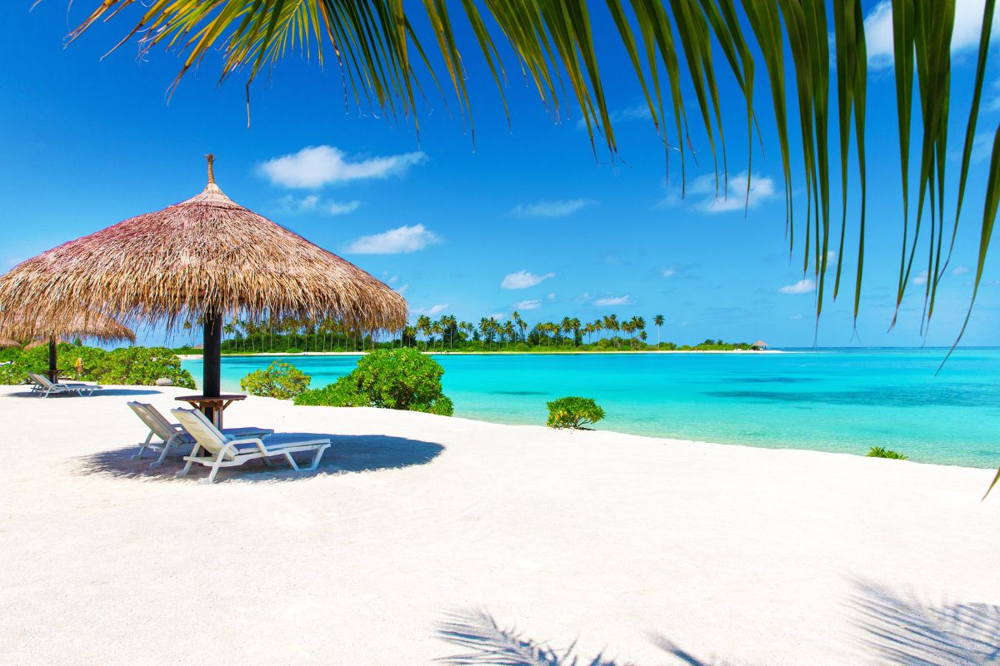

- 
-
-
🌊 Maldives 🇲🇻
968€ TTC
-
-
🤿 Activités Nautiques & Plongée
Snorkeling sur les récifs coralliens 🐠 : Explorez les magnifiques récifs avec poissons tropicaux, raies manta et tortues.
Plongée sous-marine avec les requins-baleines 🦈 : Expérience unique à ne pas manquer, notamment à South Ari Atoll.
Excursion en bateau à fond de verre 🚤 : Parfait pour observer la faune marine sans se mouiller.
Nager avec les dauphins sauvages 🐬 : Une sortie magique dans l’océan Indien.
Jet-ski, paddle & kayak transparent 🚣♀️ : Pour profiter du lagon en toute tranquillité.
⛵ Excursions & Aventures
Croisière au coucher du soleil 🌅 : Naviguez sur un dhoni (bateau traditionnel) et observez les dauphins.
Excursion sur une île déserte 🏝️ : Passez une journée sur un banc de sable privé.
Visite d’un village local 🏘️ : Découvrez la culture maldivienne et rencontrez les habitants.
Balade en hydravion ✈️ : Vue aérienne époustouflante des atolls et lagons turquoises.
Pêche nocturne traditionnelle 🎣 : Apprenez les techniques locales et dégustez votre prise au barbecue.
💆♀️ Détente & Bien-être
Massage en spa sur l’eau 🌺 : Expérience relaxante avec vue sur le lagon.
Yoga au lever du soleil 🧘♂️ : Séance sur la plage avec une brise marine apaisante.
Dîner romantique sur la plage 🍽️ : Repas aux chandelles sous un ciel étoilé.
Cinéma en plein air sur la plage 🎥 : Regardez un film sous les étoiles avec le bruit des vagues.
🍽️ Expériences Gastronomiques & Culturelles
Dégustation de fruits de mer frais 🦞 : Essayez le mas huni (thon, coco et citron vert) et le curry maldivien.
Marché aux poissons de Malé 🎣 : Plongez dans l’ambiance locale et observez les pêcheurs.
Cours de cuisine locale 🍛 : Apprenez à préparer des plats traditionnels maldiviens.
Découverte des îles habitées 🏝️ : Explorez des atolls authentiques comme Maafushi ou Thulhaagiri.